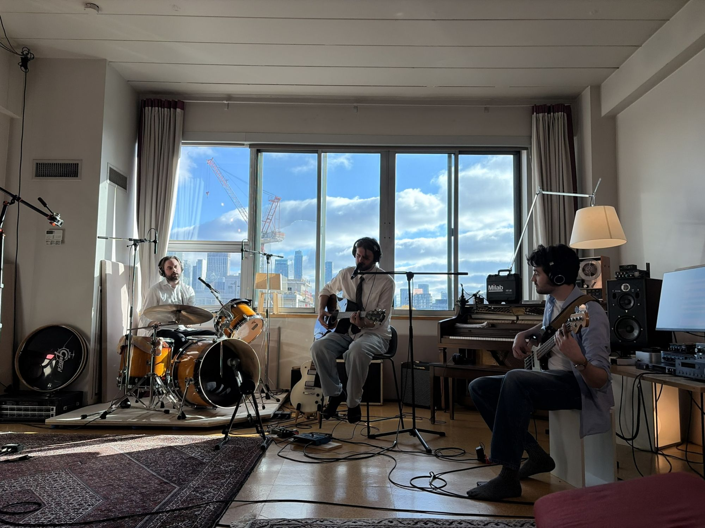
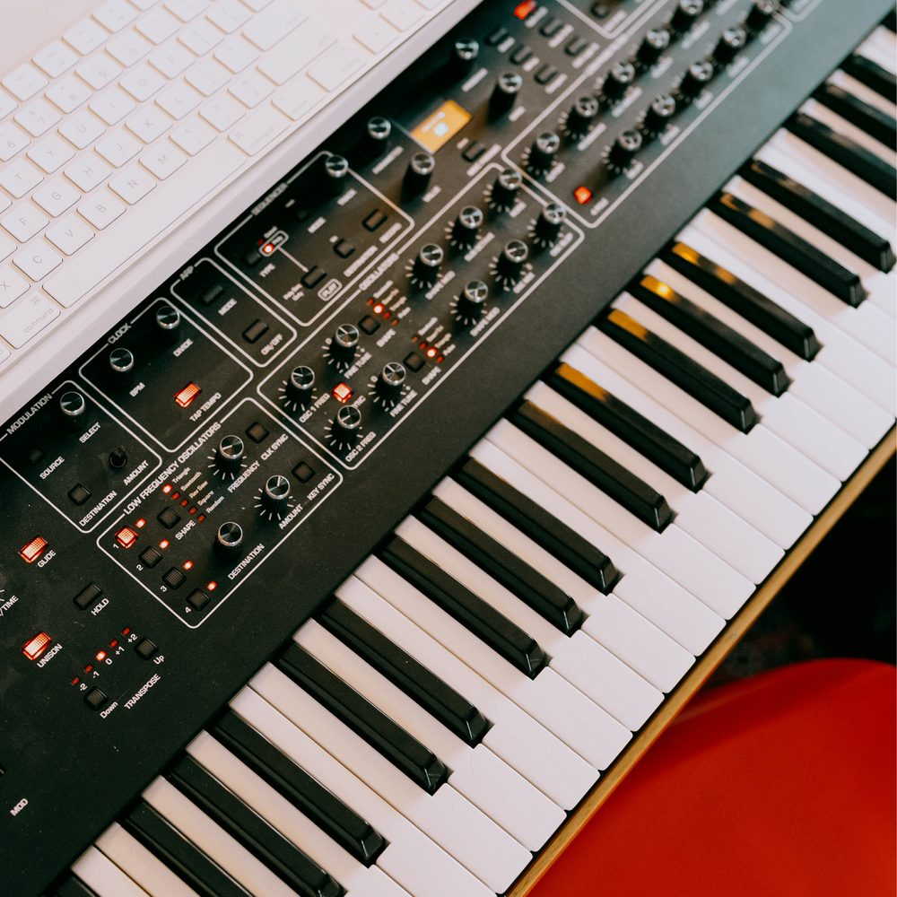
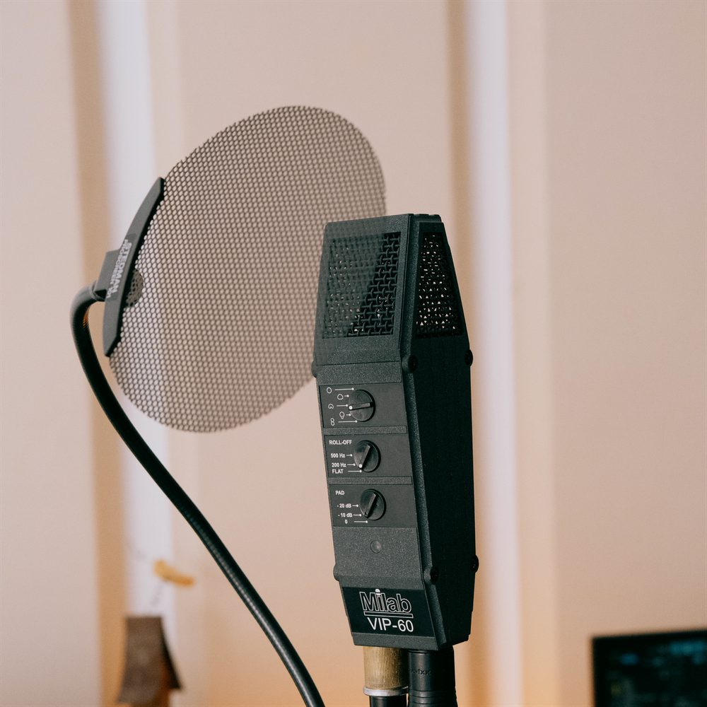
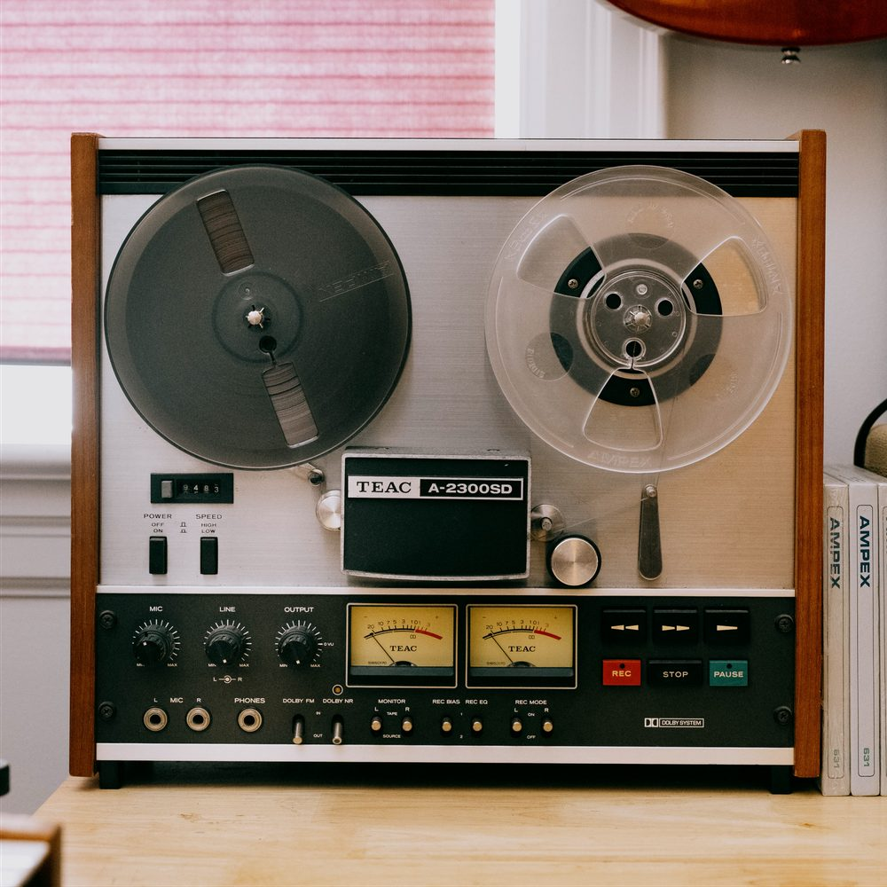
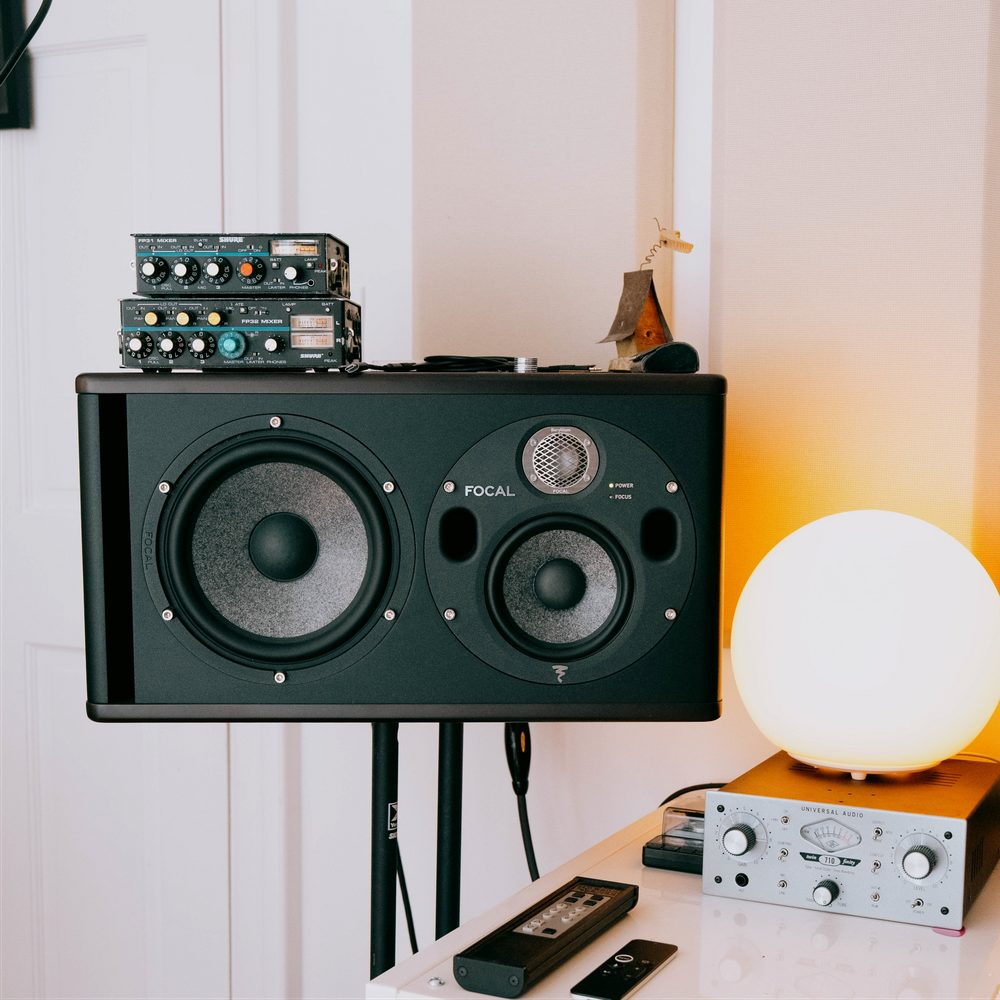
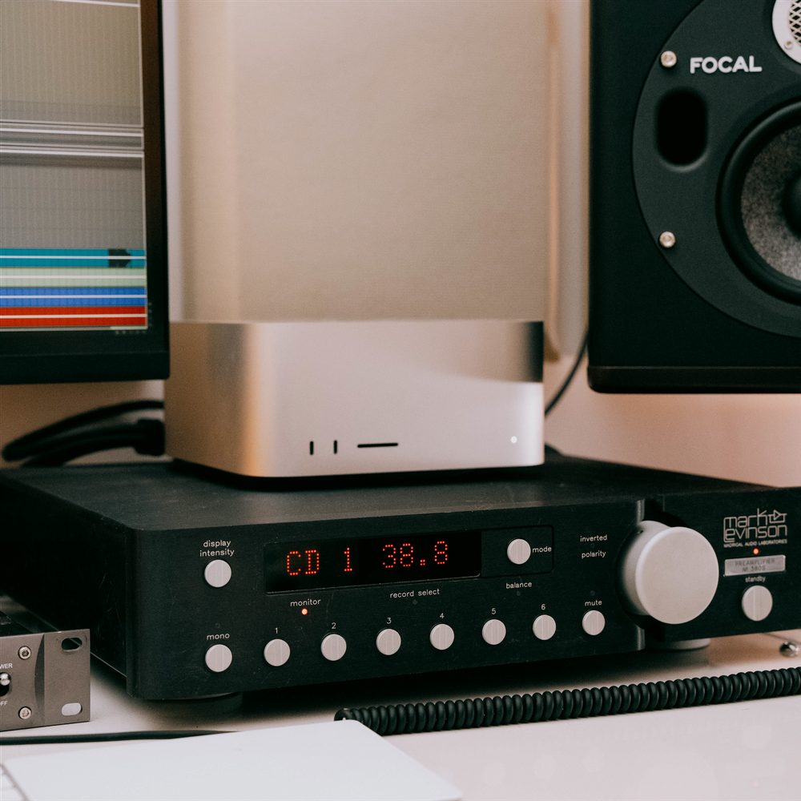
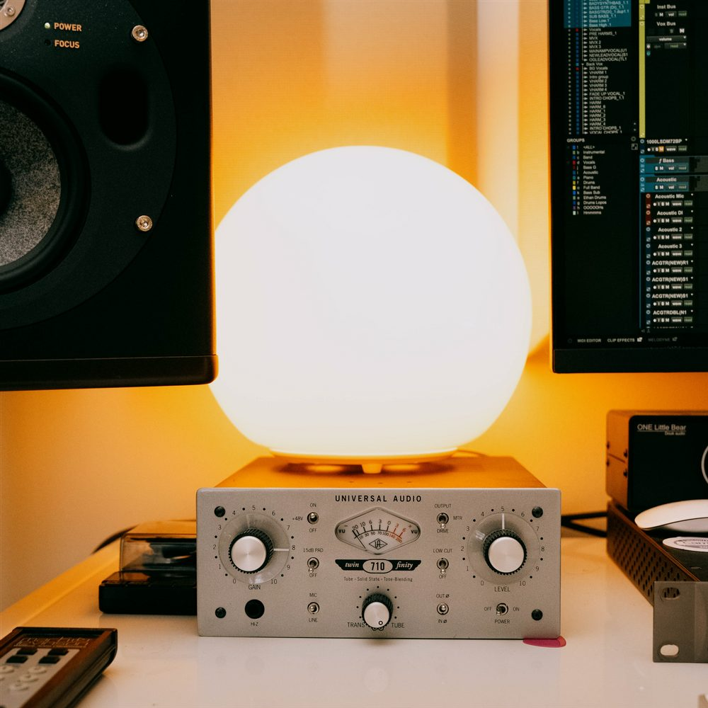

Recording studio · Toronto
Room to play.
High ceilings, big light and the whole skyline in the window. Bring the band, set up the drums, sit at the piano — and cut it live off the floor. Production, mixing and mastering, all under one roof.

01
Services
- Production
- Mastering
- Mixing
- Recording Live or track by track
- Demos
- Consultations
02
Gear






Microphones
| Item | Qty |
|---|---|
| Milab VIP-60 | 1 |
| Milab VM-44 | 2 |
| Audio Technica AT-4050 | 1 |
| Line CM4 | 1 |
| Shure SM57 | 6 |
| Shure Beta 52 | 1 |
| Shure Beta 58A Dynamic Vocal Microphone | 1 |
| Shure LX Wireless System | 3 |
| Telex USR-100 Diversity UHF Receiver + Lav Mic | 1 |
| AKG C1000S Condenser Microphone | 1 |
| Sennheiser Evolution e815 Dynamic Microphone | 1 |
| Audio-Technica AT8570 MLa Gooseneck Condenser Mic | 2 |
| Crown PCC160 Surface/Boundary Microphone | 1 |
| Sculptured Sound XLR MIC-200A Surface Cardioid Mic | 1 |
| Sony ECM-55B Lavalier Microphone | 1 |
| Small condenser mics (CL2 pair) with stereo bar H10 | 2 |
| Behringer Dynamic Microphone (with holders) | 1 |
| Realistic PZM Microphone (Model 33-1090B) | 1 |
| Earset/Headset Mic Lot (Shure & AKG mixed) | 1 |
Monitoring
| Item | Qty |
|---|---|
| Focal Trio BE 6's | 1 |
| Mark Levinson No.38l Preamplifier | 1 |
| Cabasse Passive Speakers | 1 |
| Sonos Amp | 1 |
| Audio Technica ATH-M70X, M50x, M40x, M30x, R70x (open back) | 5 |
| Behringer P1 Personal In-Ear Monitor Amplifier | 1 |
| AKG Headset/Earset Mic System (flesh-tone, XLR) | 1 |
Hardware
| Item | Qty |
|---|---|
| Mac Studio M2 Pro Max | 1 |
| Apollo X6 | 1 |
| Monster HTS Power Conditioner | 1 |
Instruments
| Item | Qty |
|---|---|
| Gibson Les Paul Studio Electric | 1 |
| Taylor Acoustic | 1 |
| Paco Castillo Nylon String | 1 |
| Fender Jazz Bass | 1 |
| Mason & Risch Upright Piano | 1 |
| Sequential Prophet Rev 2 Analog Synth | 1 |
| Custom Built 5 Piece Drum Kit | 1 |
| Meinl Byzance Sand Hats | 1 |
| Sabian HHX Anthology Ride | 1 |
Processing
| Item | Qty |
|---|---|
| UA 710 Microphone Preamp | 1 |
| TEAC A-2300SD Reel to Reel | 1 |
| UA Max Compressor Pedal | 1 |
| RAT Distortion Pedal | 1 |
| ART Passive DI | 3 |
| Radial J48 Active DI | 1 |
| Radial ProRMP Passive Reamp | 1 |
| dbx 2031 Single-Channel 31-Band Graphic EQ/Limiter | 1 |
| dbx 2215 Dual-Channel 15-Band Graphic EQ/Limiter | 1 |
| Yamaha SPX90 Digital Multi-Effects Processor | 1 |
| dbx 266xs Dual-Channel Compressor/Gate | 1 |
| dbx Project 1 274 4-Channel Expander/Gate | 1 |
| Traynor TEQ1531 Dual-Channel 31-Band Graphic EQ | 1 |
Amps
| Item | Qty |
|---|---|
| Fender 1961 Tremoloux 6G9 Tube Amp | 1 |
| Fender Hot Rod Deluxe | 1 |
| Ampeg Rocket RB-108 Bass Amp | 1 |
| Ampeg Rocket RB-115 Bass Amp | 1 |
| Marshall Model 3005 "Lead 12" — 12W Solid State Head + 2× Speaker Cabinets | 1 |
Software
| Item | Qty |
|---|---|
| Pro Tools Studio | 1 |
| Fab Filter Full Suite | 1 |
| Slate Digital Full Access Pass | 1 |
| Harrison Audio Full Suite | 1 |
| SSL Full Suite | 1 |
| Antares Auto Tune Advanced | 1 |
| Soothe2 | 1 |
03
Contact
Bookings and quotes by email.
max@studio406.co